Student Track Clean Code
Introductie
Voorstelronde
Huisregels
Agenda
- 09:00 - 10.30 : Clean Code
- 10.30 - 10.50 : Koffiepauze
- 10.50 - 12.00 : Clean Code
- 12.00 - 12.45 : Lunch
- 12.45 - 14.30 : Git
- 14.30 - 14.50 : Middagpauze
- 14.50 - 16.00 : Git
Clean Code

private List<List<String>> splitPaymentIds(List<String> paymentIds) {
if (paymentIds.size() <= 1000) { ← Why 1000?
return Arrays.asList(paymentIds);
} else {
int parts = (paymentIds.size() / 1000) + 1;← Why + 1?
List<List<String>> paymentIdsParts = new ArrayList<>(parts);
for (int i = 0; i < parts; i++) {
int start = i * 1000;
int end = (i + 1) * 1000;
if ((i + 1) == parts) {← What does the equation say?
end = paymentIds.size();
}
paymentIdsParts.add(paymentIds.subList(start, end));
}
return paymentIdsParts;
}
}
Shame
Writing clean code is hard
So why do it?

Broken Window Theory

Meaningful Names
int d = 0; // Aantal dagenIf a name requires a comment, then the name does not reveal its intent.
public List<Cell> getThem(List<Cell> theList) {
List<Cell> list1 = new ArrayList<>();
for (Cell x: theList) {
if (x.getState() == 4) {
list1.add(x);
}
}
return list1;
}public function getFlaggedCells(List<Cell> board) {
List<Cell> flaggedCells = new ArrayList<>();
for (Cell cell : board) {
if (cell.isFlagged()) {
flaggedCells.add(cell);
}
}
return flaggedCells;
}// Where a1 and a2 are arrays
private static void copyChars(char[] a1, char[] a2) {
for (int i = 0; i < a1.length; i++) {
a2[i] = a1[i];
}
}// Where source and destination are arrays
private static void copyChars(char[] source, char[] destination) {
for (int i = 0; i < source.length; i++) {
destination[i] = source[i];
}
}class DtaRcrd102 {
private LocalDateTime genymdhms;
private LocalDateTime modymdhms;
}
class Customer {
private LocalDateTime generated;
private LocalDateTime modified;
}Use pronouncable names
int s = 0;
for (int i = 0; i < 34; i++) {
s += (t[i] * 4) / 5;
}final int WORK_DAYS_PER_WEEK = 5;
final int REAL_DAYS_PER_IDEAL_WEEK = 4;
final int NUMBER_OF_TASKS = 34;
int sum = 0;
for (int i = 0; i < NUMBER_OF_TASKS; i++) {
int realTaskDays = taskEstimate[i] * REAL_DAYS_PER_IDEAL_WEEK;
int realTaskWeeks = realTaskDays / WORK_DAYS_PER_WEEK;
sum += realTaskWeeks;
}Use searchable names
String phoneString = 'Some string';
String s_phone = 'Some string';
interface IShape {
public int getSize();
}Avoid encodings
One word per concept
fetch(), get() and retrieve() are the same
Also holds for class names
Practice Time!
Code available at https://git.io/clean-code
Try to apply the rules we've discussed so far.
Functions
private List<List<String>> splitPaymentIds(List<String> paymentIds) {
if (paymentIds.size() <= 1000) {
return Arrays.asList(paymentIds);
} else {
int parts = (paymentIds.size() / 1000) + 1;
List<List<String>> paymentIdsParts = new ArrayList<>(parts);
for (int i = 0; i < parts; i++) {
int start = i * 1000;
int end = (i + 1) * 1000;
if ((i + 1) == parts) {
end = paymentIds.size();
}
paymentIdsParts.add(paymentIds.subList(start, end));
}
return paymentIdsParts;
}
}Keep functions small
private List<List<String>> splitPaymentIds(List<String> paymentIds) {
if (paymentIds.size() <= 1000) {
return Arrays.asList(paymentIds);
} else {
int parts = (paymentIds.size() / 1000) + 1; ← Calculate parts
List<List<String>> paymentIdsParts = new ArrayList<>(parts);
for (int i = 0; i < parts; i++) { ← Split up list
int start = i * 1000;
int end = (i + 1) * 1000;
if ((i + 1) == parts) {← Determine if its the last item
end = paymentIds.size();
}
paymentIdsParts.add(paymentIds.subList(start, end));← Storing sub-list
}
return paymentIdsParts;
}
}Functions should do one thing. They should to it well. They should do it only.
public BigDecimal calculatePay(Employee employee) {
switch (employee.getType()) {
case COMMISSIONED:
return calculateCommissionedPay(employee);
case HOURLY:
return calculateHourlyPay(employee);
case SALARIED:
return calculateSalariedPay(employee);
default:
throw new UnknownEmployeeTypeException(employee.getType());
}
}Prefer polymorphism to If/Else or Switch/Case
Large , violates Single Responsibility Pattern , violates Open Closed Principle , duplicationvoid niladic () {}
void monadic (int var1) {}
void dyadic (int var1, int var2) {}
void triadic (int var1, int var2, int var3) {}
void polyadic (int var1, int var2, int var3, int var4) {}
void variadic (int... vars) {}Polyadic functions require special justification - and then shouldn't be used anyway
void makeCirle(int x, int y, int radius) { }
void makeCircle(Point point, int radius) { }Use argument objects
render(true);
renderWithShadows();
renderWithoutShadows();Niladic functions are the easiest to reason about
private void removeNegatives(List<Integer> values) {
for (int index = 0; index < values.size(); index++) {
if (values[index] < 0) {
values.remove(index);
}
}
}
List<Integer> values = Arrays.asList(2, -3, 4, 5);
removeNegatives(values);
values.forEach(System.out::println); // 2, 4, 5Should not have side effects!
public boolean checkPassword(String username, String password) {
User user = this.findUser(username);
if (user != null) {
if (user.getPassword().equals(password)) {
Session.initialize(); // This is bad
return true;
}
}
return false;
}private void set(String key, Object value) {
/** execute some logic **/
return succes;
}
if (set("1", "yayaya")) {
System.out.println("We got here!");
}CQS - Command Query Separation
if (keyExists("1")) {
setKeyValue("1", "yayaya");
}CQS - Command Query Separation
if (deletePage(page)) {
if (registry.deleteReference(page.name)) {
if (configKeys.deleteKey(page.name.makeKey())) {
logger.info("page deleted!");
} else {
logger.info("configKey not deleted");
}
} else {
logger.info("registry entry not deleted");
}
} else {
logger.info("page not deleted");
}Prefer exceptions to error codes
try {
deletePage(page);
registry.deleteReference(page.name);
configKeys.deleteKey(page.name.makeKey());
} catch (SystemException exception) {
logger.error("Could not delete page", exception);
}Prefer exceptions to error codes
private void registerItem(Item item) {
if (item != null) {
Registry registry = this.store.getItemRegistry();
if (registry != null) {
Item existing = registry.getItem(item.getID());
if (existing != null) {
existing.register(item);
}
}
}
}Null is the root of all evil
List<Employee> employees = getEmployees(); // Returns null
if (employees != null) {
for (Employee e: employees) {
// Do something
}
}
List<Employee> employees = getEmployees(); // Returns empty list
for (Employee e: employees) {
// Do something
}Also possible to use the Null Object pattern
private List<List<String>> splitPaymentIds(List<String> paymentIds) {
if (paymentIds.size() <= 1000) {
return Arrays.asList(paymentIds); // Exit One
} else {
int parts = (paymentIds.size() / 1000) + 1;
List<List<String>> paymentIdsParts = new ArrayList<>(parts);
for (int i = 0; i < parts; i++) {
// collapsed for clarity
}
return paymentIdsParts; // Exit Two
}
}NEVER USE GOTO

Practice Time!
Code available at https://git.io/clean-code
Try to apply the rules we've discussed so far.
Comments
What is a bad comment?
What is a good comment?
public function loadSettings() {
try {
loadProperties.load('SomeFile.prop');
} catch (IOException e) {
// No properties files means all default are loaded
}
}Mumbling
/**
* Class that represents a counter
*/
class Counter {
/**
* The internal representation of the count
*/
private int count = 0
/**
* Return the count
* @return the count
*/
public function getCount() {
return this.count;
}
}Avoid redundant comments
Only adds more things to maintain
/**
* Added by Bob
* --------
* 06-Jul-2016 : Wrote first version
* 07-Jul-2016 : Added getCount function
* 08-Jul-2016 : Refactored count to be a long instead of an int
*/
class Counter {
private int count = 0
public function getCount() {
return this.count;
}
}We have source control for this
long displayResult() {
long result = doSomeCalculation();
//result = result / 200;
//result = result + someValue();
return result;
}Always remove commented out code
private List<List<String>> splitPaymentIds(List<String> paymentIds) {
if (paymentIds.size() <= 1000) {
return Arrays.asList(paymentIds);
} else {
// Calculate amount of parts
int parts = (paymentIds.size() / 1000) + 1;
int parts = calculateAmountOfParts(paymentIds);
List<List<String>> paymentIdsParts = new ArrayList<>(parts);
for (int i = 0; i < parts; i++) {
// collapsed for clarity
}
return paymentIdsParts;
}
}Don't use a comment when you can use a function or variable
Good comments
- Legal stuff
- Informative
- Explanation of intent
- Clarification
- Amplification
- TODO?
Don't comment bad code - rewrite it.
Practice Time!
Code available at https://git.io/clean-code
Try to apply the rules we've discussed so far.
Formatting
Choose a style and stick with it
KISS
Keep It Simply Stupid
Your code should not be a Rube Goldberg machine
DRY
Dont repeat yourself
Duplicated code is a breeding ground for bugs
YAGNI
You Aint Gonna Need It
Don't let your code rot
Remove code that is no longer used
Boy Scout Rule
Leave the campground cleaner than you found it
First implementations are ugly
So we need to refactor
How to enable refactoring?
Tests!!
TDD

Summary
Names
- Show intent
- Are pronouncable
- Do not contain disinformation or type encodings
Functions
- Are small
- Do one thing and do it well
- Have 1, 2 or 3 arguments
- Are pure (do no have side effects)
- Throw exceptions instead of returning error codes
- Do not return null
- Have one entry and one exit point
Comments
- Add value
Revisited
int parts = calculateAmountOfParts(source);
List<List<String>> result = partition(source, parts);
private List<List<String>> partition(List<String> source,
int amountOfParts) {
List<List<String>> parts = new ArrayList<>(amountOfParts);
for (int partIndex = 0; partIndex < amountOfParts; partIndex++) {
Range range = calculateRange(partIndex, amountOfParts);
List<String> part = source.subList(range.start, range.end);
parts.add(part);
}
return parts;
}Revisited 2
int parts = calculateAmountOfParts(source);
List<List<String>> result = ListUtils.partition(source, parts);Git

"I'm an egotistical bastard, and I name all my projects after myself. First 'Linux', now 'git'."
Linus Torvalds
The commands
- init
- add
- commit
- checkout
- branch
- merge
- log
- status
- reset
- rm
- fetch
- pull
- push
- remote
- clone
Why version control?
- Duplication
- Unclear what changes
- Hard to merge changes
Why version control?

Easy/Tool supported merging
Less duplication
Clear History / Easy to restore old version
Flavors of version control
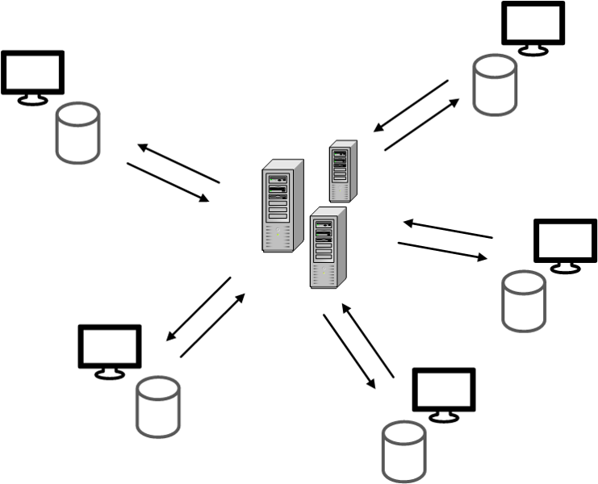Flavors of version control

The three stages
The three stages

The three stages
.gitignore
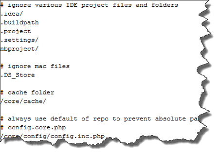https://www.gitignore.io/
Opdracht (+- 10 minuten)
- Creer een nieuwe git repository
- Voeg een bestand toe -> bestand1.txt
- Verplaats bestand1.txt naar de staging area
- Maak bestand2.txt aan en zorg dat git dit bestand negeert
- Commit bestand1.txt
- Maak de commit ongedaan (NEW)
- Pas bestand1.txt aan
- Commit alle wijzigingen in de staging area
- Pas het bestand aan en voeg deze toe aan de commit zonder de commit ongedaan te maken (NEW)
Behind the scenes
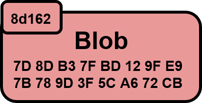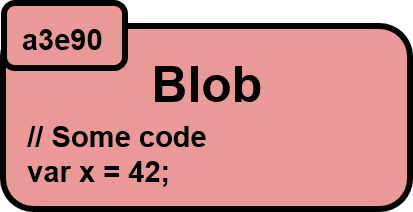
Behind the scenes
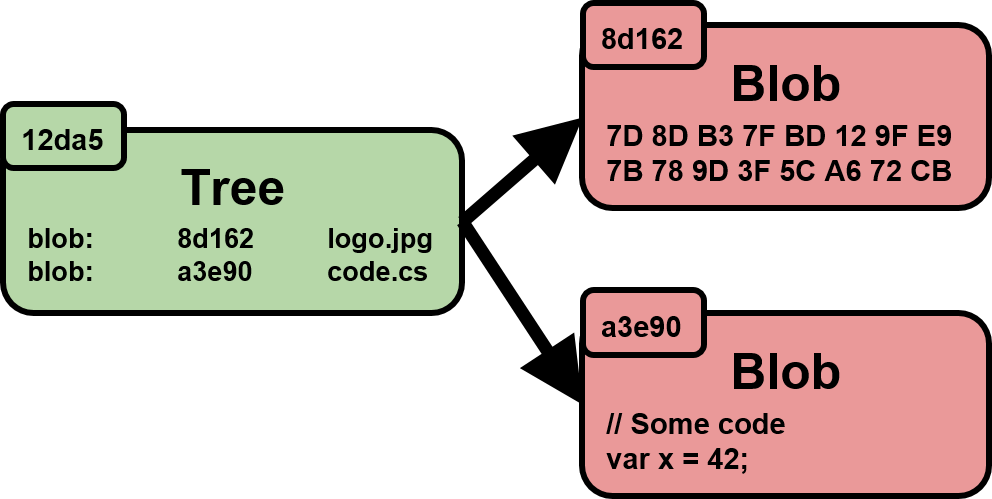Behind the scenes
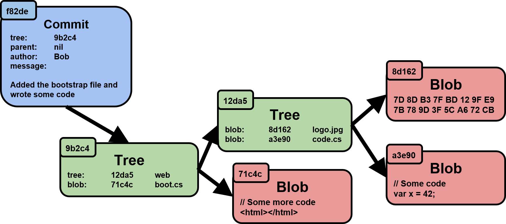Behind the scenes
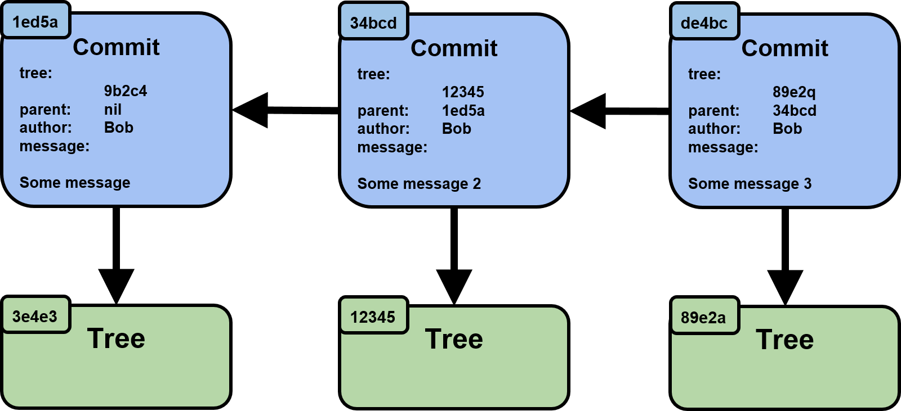Demo
Branching
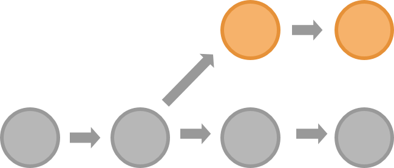Merging

Merging
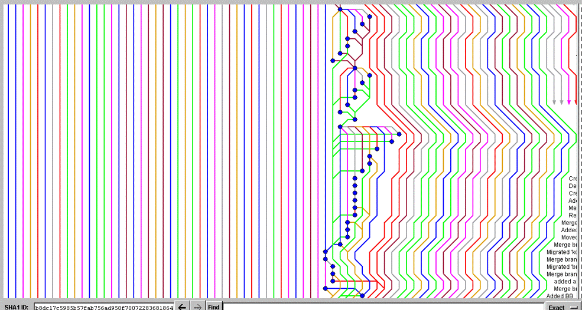Rebasing

Rebasing
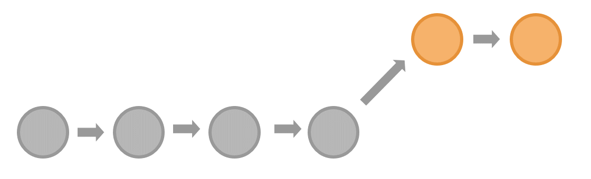Rebasing
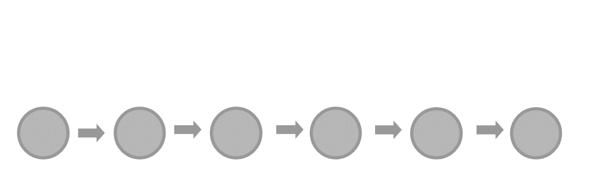Opdracht (+- 15 minuten)
Part 1
- Creer een nieuwe branch vanaf master
- Maak op de branch een aanpassing in bestand1.txt en commit dit
- Ga nu terug naar de master branch
- Maak een aanpassing in bestand1.txt waar een merge conflict zou moeten onstaan met de wijziging op je branch en commit dit
- Merge nu je wijzigingen naar master en los de merge conflicten op.
- Bekijk de graph en onthou wat je ziet.
Part 2
- Reset je repository naar de laatste commit voor de merge (NEW)
- Rebase de nieuwe branch op master
- Merge de branches en bekijk de graph
- Wat is het verschil?
Tijd over? Probeer de rebase eens via een interactive rebase te doen!
Graph: git log --graph --oneline --all
Remote
Opdracht (+- 10 minuten)
- Ga naar een nieuwe directory en clone de repository waar bestand1.txt in staat
- Commit hier een aantal wijzigingen op de master branch
- Push deze wijzigingen naar de remote
- Maak vervolgens nog een wijziging en commit deze. Push de wijziging nog niet!
- Ga naar de `remote`, maak hier ook een wijziging en commit deze
- Ga terug naar de lokaal uitgecheckte repository en probeer je wijzigingen te pushen.
- Wat gaat er mis? Hoe kan je dit oplossen?
Puzzel
Easy: https://github.com/riezebosch/hslgit
Hard: https://github.com/bobvdb/git-puzzle
Thanks!
Slides available at https://git.io/clean-code